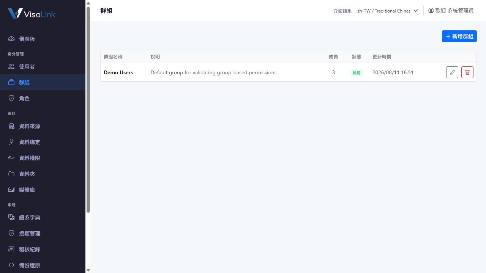
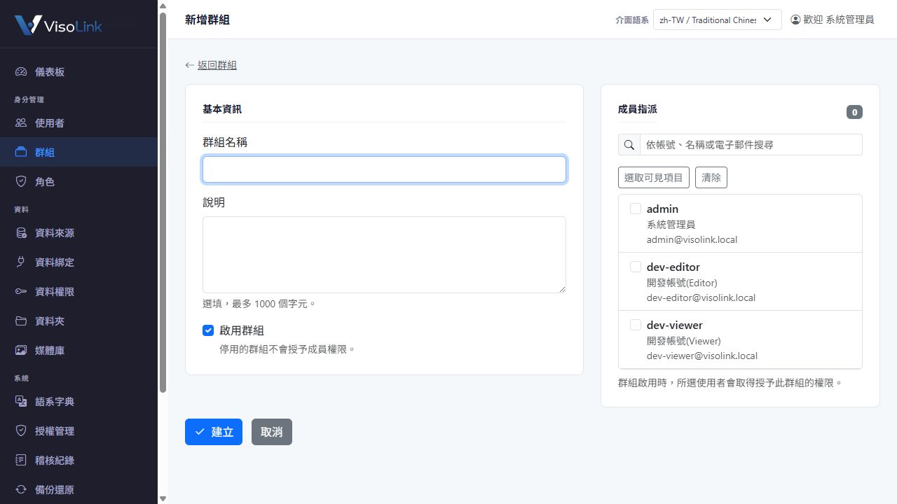

Groups 群組
將使用者依組織、班別或職責分組，讓 DataBinding 與資源權限可集中維護。
瀏覽群組清單

- 點選「身分管理 → 群組」。
- 依名稱與成員數找到目標群組。
- 開啟群組以查看完整設定。
建立與編輯群組

- 名稱與說明
- 以部門、班別或責任範圍命名，避免只使用代號。
- 啟用狀態
- 決定群組是否參與目前的權限判斷。
- 成員
- 搜尋並勾選使用者，儲存後回清單確認數量。
- 點選新增群組，或從清單開啟既有群組。
- 輸入可辨識的群組名稱與說明。
- 設定啟用狀態。
- 完成成員選擇後儲存。
- 返回清單確認名稱與成員數。
群組名稱、狀態及成員數與預期一致。
啟用與停用群組
停用群組前應先確認所有以該群組為 Principal 的資料與資源權限規則。
- 開啟群組編輯頁。
- 切換群組啟用狀態。
- 儲存後驗證成員的實際存取結果。
管理群組成員
- 開啟群組編輯頁，使用搜尋欄查找使用者。
- 勾選需要加入的成員；可選取目前可見項目。
- 取消不再屬於群組的成員，或使用清除功能。
- 儲存並確認成員數。
- 以代表性帳號驗證資料與功能權限。
清單成員數更新，代表性帳號取得或失去相應群組權限。
刪除群組
- 先查核群組是否被 DataBinding 或資源權限引用。
- 完成規則移轉或移除。
- 在清單點選刪除並確認。
- 確認群組已移除且使用者帳號本身仍存在。